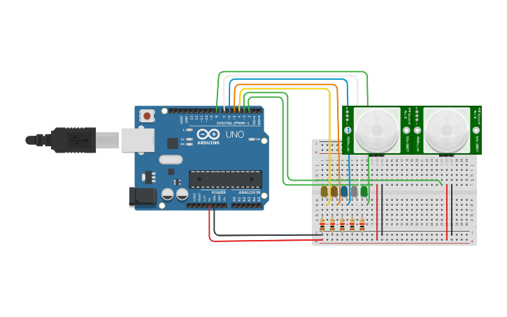
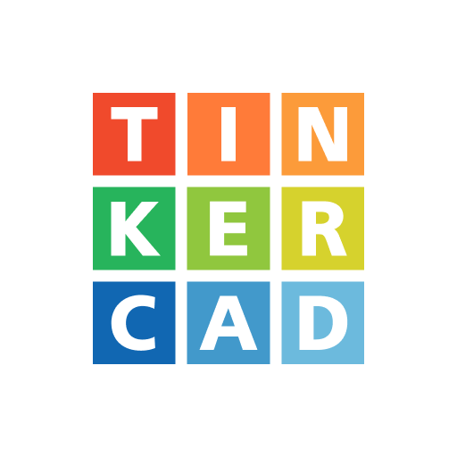

Sincronizando conceptos
Simulador

- Definición
-
Es una aplicación que puede ser instalada en el ordenador (local) u online (accesible vía navegador) que nos permite reproducir un sistema físico sin necesidad de montarlo físicamente, con el consecuente ahorro de tiempo y dinero.
- Ejemplo
-
Utilicé un simulador de Arduino porque no disponía de la placa física.
TinkerCAD

- Definición
-
Es una de las mejores aplicaciones que podemos emplear para simular sistemas electrónicos, que requieran o no programación. Accesible en la dirección www.tinkercad.com.
- Ejemplo
-
Sé simular un semáforo en el simulador de TinkerCAD.
 Nos volvemos a colocar por parejas.
Nos volvemos a colocar por parejas. Una vez que has
Una vez que has